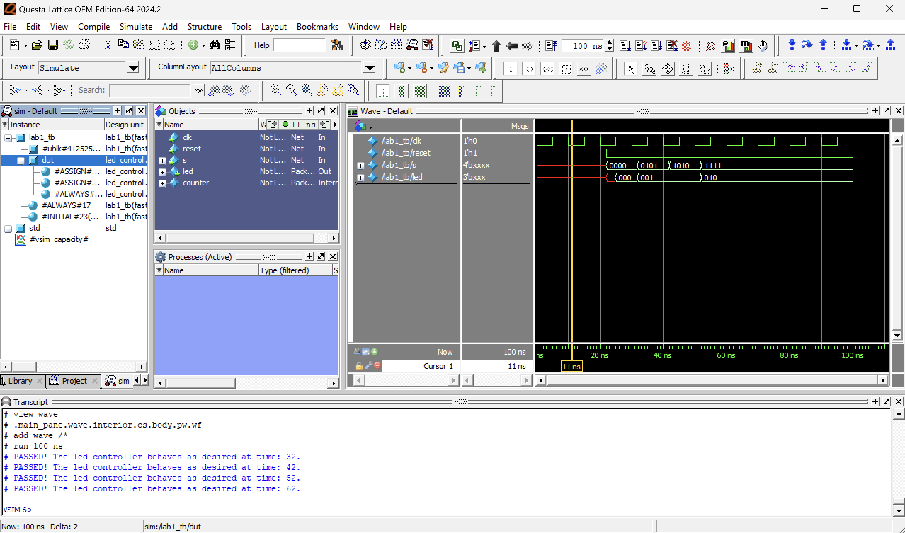
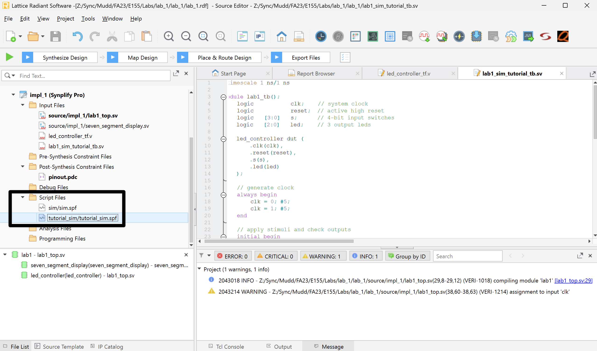

Lab 1: FPGA and MCU Setup and Testing
Introduction
In this lab you will familiarize yourself with the microcontroller unit (MCU) and field-programmable gate array (FPGA) development boards we will be using this semester.
Learning Objectives
By the end of this lab you will have…
- Assembled your development board for the class and tested out your MCU and FPGA boards.
- Written a Verilog module to control LEDs and a 7-segment display.
- Programmed the FPGA with Verilog code.
- Gained confidence in building, assembling, testing, and debugging circuits.
- Interfaced a 7-segment display to the board.
Requirements
Follow the steps in this guide to test your FPGA and MCU boards. Write some Verilog code to exercise the FPGA using the switches, LEDs, and a 7-segment display to ensure your board is operational. Simulate and synthesize your code, then upload it to the flash memory and re-test the board. Hook up a 7-segment display and demonstrate that it works.
Before You Start
Before you start working on this lab, you should familiarize yourself with the documentation for both the UPduino v3.1 and Nucleo-L432KC boards. The website has links for the UPduino v3.1 User Guide and the Nucleo-L432KC User Manuals on the Resources tab. These two documents contain information that will be helpful for answering questions that you may have during the course of this lab.
You should also read this tutorial with important programming instructions and background information for the FPGA and MCU.
Development Board Assembly
Before you start working on your FPGA design, you need to assemble your development board as described in this tutorial. The majority of your time on this lab will likely be spent assembling the board, so make sure to plan ahead.
Create Your Git Repository
The first step before you begin writing any code is to create a Git repository. Follow the linked tutorial to get started with your project.
FPGA Design
Now it’s your turn to take the wheel and create your own design and dust off your digital design chops! Your goal is to write some Verilog modules to further test the hardware on your board and operate a 7-segment display. The system should have the following inputs and outputs:
| Signal Name | Signal Type | Description |
|---|---|---|
clk |
input | 48 MHz clock on FPGA |
s[3:0] |
input | the four DIP switches (on the board, SW6) |
led[2:0] |
output | 3 LEDs (you may use the on-board LEDs) |
seg[6:0] |
output | the segments of a common-anode 7-segment display |
The following tables define the relationship of the LEDs to the switches and clock.
S1 |
S0 |
led[0] |
|---|---|---|
| 0 | 0 | OFF |
| 0 | 1 | ON |
| 1 | 0 | ON |
| 1 | 1 | OFF |
S3 |
S2 |
led[1] |
|---|---|---|
| 0 | 0 | OFF |
| 0 | 1 | OFF |
| 1 | 0 | OFF |
| 1 | 1 | ON |
led[2] |
|---|
| Blink at 2.4 Hz |
To generate the clock for your design, use the onboard high-speed oscillator. This is the same strategy as in the FPGA testing source code you downloaded earlier to test the board. If you look at that Verilog code, you’ll notice an instantiated module called HSOSC (for High-Speed OSCillator). This module is part of the iCE40 Technology Library (see the iCE40 Technology Library document linked on the course website) and is a built-in module included with Lattice Radiant designed for controlling the internal oscillator on the iCE40 chip. You can simply copy the line from the testing program and use it in your project.
Design and Synthesis in Radiant
The 7-segment display should display a single hexadecimal digit specified by s[3:0]. Be sure each digit can be distinguished from other digits (e.g., b and 8 should look different). Remember that you will be using a common anode display. The anode (positive terminal) of all of the LEDs is tied to 3.3 V through a single (“common”) pin. Each segment’s cathode (negative terminal) is connected to a pin. Therefore, you will need 7 separate control signals. Remember that a logic 0 applied to the cathode will turn on the segment. The segments are defined as shown below. Let seg[0] be A and seg[6] be G.

Launch Lattice Radiant and start the New Project Wizard from the File or startup menu. Setup a new project for the UP5K chip following the instructions in the Lattice Radiant Tutorial on the E155 website.
Choose File → New and create a SystemVerilog HDL file. Save the file as lab1_xx.sv in your project directory and check the box to add the file to the current project. Create modules to perform the functions described above. The 7-segment display decoder should be combinational logic. Use a reasonable amount of hierarchy. Name the top-level module lab1_xx. The 7-segment display code, for example, will be reused in future labs, so it should be a module of its own (for the sake of reusability you may want to put this in a separate SystemVerilog file but this is not required). Every module should begin with a comment section that includes your name and email address, the date of creation, and a brief summary of its purpose, so that somebody else can understand what the module does and get a hold of you if they need help with it. Comment the modules as appropriate.
Logic Simulation in ModelSim
The next step is to simulate your logic with ModelSim. Open ModelSim from Radiant from the Tools->QuestaSim Lattice Edition menu or the icon in the toolbar. The ModelSim window will open. Get in the habit of watching the transcript window to look for errors and to familiarize yourself with what a good run looks like. If you see errors, close ModelSim, correct your Verilog code in Radiant, and reopen ModelSim. You can also edit the file directly in ModelSim and recompile there without going through the entire synthesis pipeline in Radiant.
Some of your designs may include modules from the iCE40 Technology Library (e.g., the HSOSC module we are using to generate our clock signal). If you try to simulate a design including one of these modules, you need to be sure to include the library. When you simulate a design that includes a module from the iCE40 Technology Library, make sure that you include the library by adding under the Libraries tab of the Start Simulation window as shown below. You can also use the -L flag in the command line to vsim.
Starting Simulation
In QuestaSim/ModelSim, simulate your module by choosing Simulate → Start Simulation.... Click on the + symbol next to the work library and select your code (lab1_xx).
If the wave pane isn’t open, open it by choosing View → Wave. View all of the inputs and outputs of your design by selecting them in the Objects window and dragging them to the Waves window. In a more complicated design, you may wish to examine internal signals as well.
Manually test your design by forcing the inputs to specific values and then advancing the simulation using “run.” In the transcript window, type:
force s 0000
run 100
force s 0001
run 100
force s 0010
run 100
...If you’re not seeing all the signals in your design, it’s possible that QuestaSim optimized them away. To configure the optimization settings, see the relevant section in the QuestaSim/ModelSim tutorial.
You should see the led and seg outputs displaying appropriate values. Check the outputs against your expectations. If you find any discrepancies, fix the code and resimulate. A helpful shortcut to avoid restarting ModelSim is that you can edit the module by finding it under “work” in the library pane, right clicking, and choosing Edit. Make your fixes, then right click again and choose Recompile. Then type restart -f in the transcript window to restart simulation without having to set up the waveforms window again. When you return to Radiant, you’ll find your corrected code.
Next, test your design automatically using a stim/assert style testbench. Rather than manually forcing inputs or using pre-defined test vectors, this means using your testbench to set inputs, and check for correct outputs.
Start by making a new system verilog testbench file, based on the example below. This is for an LED controller module that implements the truth table for led[0] and led[1] described above. You probably structured your code differently and should modify this testbench to test your inputs and outputs!
`timescale 1 ns/1 ns
module lab1_tb();
logic clk; // system clock
logic reset; // active high reset
logic [3:0] s; // 4-bit input switches
logic [1:0] led; // 2 output leds
led_controller dut (
.clk(clk),
.reset(reset),
.s(s),
.led(led)
);
// generate clock
always begin
clk = 0; #5;
clk = 1; #5;
end
// apply stimuli and check outputs
initial begin
reset = 1;
#22 reset = 0;
// for each test case we setup the inputs, wait for the outputs to update,
// and then check that the outputs match what we expect using `assert`
// in this case, the leds use combinational logic, so we don't *need* to wait
// a full clock cycle (#10)
// example test 1
s = 4'b0000; // setup inputs
#10; // wait required time
assert (led == 3'b00) // check outputs
$display("PASSED! The led controller behaves as desired at time: %0t.", $time);
else
$error("FAILED! The led controller behaves incorrectly at time: %0t.", $time);
// test 2
s = 4'b0101;
#10;
assert (led == 3'b01)
$display("PASSED! The led controller behaves as desired at time: %0t.", $time);
else
$error("FAILED! The led controller behaves incorrectly at time: %0t.", $time);
// ... add the rest of the states you want to check here
#100 $stop;
end
endmoduleNext, launch Questa/ModelSim using the Simulation Wizard button as shown in the figure below

Follow the instructions in the wizard to name and create the simulation. The default settings are good, but make sure to select your module name as the Simulation Top Module (in this case that would be lab1_tb).
Once you finish, Questa will automatically open and run your simulation! By default, it only runs for 100ns, so if your simulation takes longer you may need to use the run command from the manual testing section. As expected, we can see that all of the tests passed in the Transcripts section at the bottom.

By default, only signals in your testbench are displayed, but you can add more by selecting dut in the instance pane, dragging signals from Objects into Wave and then restarting the simulation with by running restart -f and then run 100. If you edit the testbench or module code, you can update the simulator by clicking Compile → Compile All or closing and re-opening the simulation. If you aren’t changing simulation settings, then you can re-open a previous simulation from Lattice by double clicking on the simulation name in the Script Files folder.

In the example above, we’re testing a module that only uses combinational logic, so testvectors would have also worked well. But the stim/assert architecture works even better for sequential logic like an FSM or clock divider. Think about (and write) a testbench to check if led[2] is blinking at the right frequency (this may involve resetting the clock divder, making sure the output is zero, waiting a known time, check if it is one, etc.).
Pin Assignment
Next, assign pins to relate the signal names in your Verilog code to physical pin numbers on the FPGA. Launch Tools → Device Constraint Editor. A table listing all inputs and outputs for the project should appear. Under Pin, type the pin number to associate with the given signal.
The FPGA pinouts are shown in the Board Schematic. Most of the user input/output (I/O) pins are tapped out to the headers and labeled on the board silk screen. Some have special functions; for example, FPGA pin P42 is connected to LED D6.
The pin numbers for the LEDs and switches are marked on the board’s silkscreen. For the outputs for the 7-segment display, you may select any I/O pins you’d like. Do make sure that these pins are not being used for other purposes.
The Device Constraint Editor is also the place where you can configure the pullup resistors for the I/O pins. To do this, examine the PULLMODE column for any input pins. In your design, this will be the pins connected to s[3:0]. These should be configured with pull-up resistors to avoid invalid logic levels (the exact value is not very important. A value between 10k and 100k is generally sufficient).
Seven Segment Display Circuit
The 7-segment display will be used throughout the class for general output of numbers. In this lab assignment, though, it will be used to output the hexadecimal number entered by the user through the DIP switches.
Each segment of the display works as an independent LED. Therefore, the same current-limiting concern with the LEDs applies to the display as to the on-board bank of LEDs. You can limit the current into each segment of the display the same way you did for the LEDs on board, adding a suitable resistor to provide roughly 5-20 mA of current. You can find resistors and other such components in the supply cabinet or in the stockroom.
Consult the data sheet for the pinout of the common anode dual seven segment display. All seven segments share the same anode, which should be connected to VCC (3.3 V). Each of the segments has its own cathode, which can be pulled to 0 to turn on the segments.
Be sure to turn power off before wiring circuits on your board. You can choose either side of the display to use in this lab. After deciding on which side to use, you will need to connect the VDD pin of that side (either VDD1 or VDD2) to 3.3 V. Then connect the input pins of the same side of the display to the header pins you chose. Remember to add suitable resistors between each of the inputs to the display and the header pins. These LEDs are common anode LEDs. That is, all the anodes from the LEDs are connected to a single VDD (VDD1 or VDD2). You are driving the cathode of each LED. Given this information, you might need to modify your Verilog file. Do so in the simplest way possible.
Generating the FPGA Configuration Files
Now you will synthesize your HDL into a programming file to be transferred onto the FPGA. This outputs a binary file (.bin) in your project directory that can be used to program the FPGA directly over JTAG using the onboard USB programmer. Be sure your SystemVerilog files are saved, and click the green “Play” triangle to start the synthesis process. To help sort the many messages that the compilation process generates, click a tab under the Message area to see only that type of message. If compilation is successful but generates warnings, check the Warning and Error tabs for errors relevant to your design. Warnings about incomplete I/O assignments may be ignored if you have in fact assigned all relevant I/O pins.
Launch Tools → Netlist Analyzer and examine the RTL schematic of your design. This shows the logic synthesized from your Verilog design. Ensure the hardware matches your expectations.
Look at the Reports tab. In the Project Summary under Resource Usage you should see a total number of registers and pins that match your expectations. Under Analysis & Synthesis, you can see how the logic blocks and registers are broken down in each module. Under Fitter, the Pin-Out File should match the pin assignments you intended.
If some of you are seeing issues with specific pins on your FPGA there could be a few different reasons and corresponding steps to take to troubleshoot.
- You could have an electrical short which is causing some pins to be electrically connected that should not due to solder bridges. Double check to make sure that the pins are isolated and not connected together by checking the resistance between the pins with a multimeter.
- You are trying to use a pin that is shared between the FPGA and the MCU and the MCU is not leaving that pin floating or it is driving it as an output. You can get around this by wiping the code on the MCU by uploading a file with a blank main function.
- You should also read through the Nucleo board documentation to see what pins have special functions that are used by default by the MCU. Hint: You likely want to stay away from using the pins that the MCU uses for serial communication by default.
AI Prototype and Reflection
Don’t forget to complete the AI Prototype and reflect on it in your lab 1 writeup.